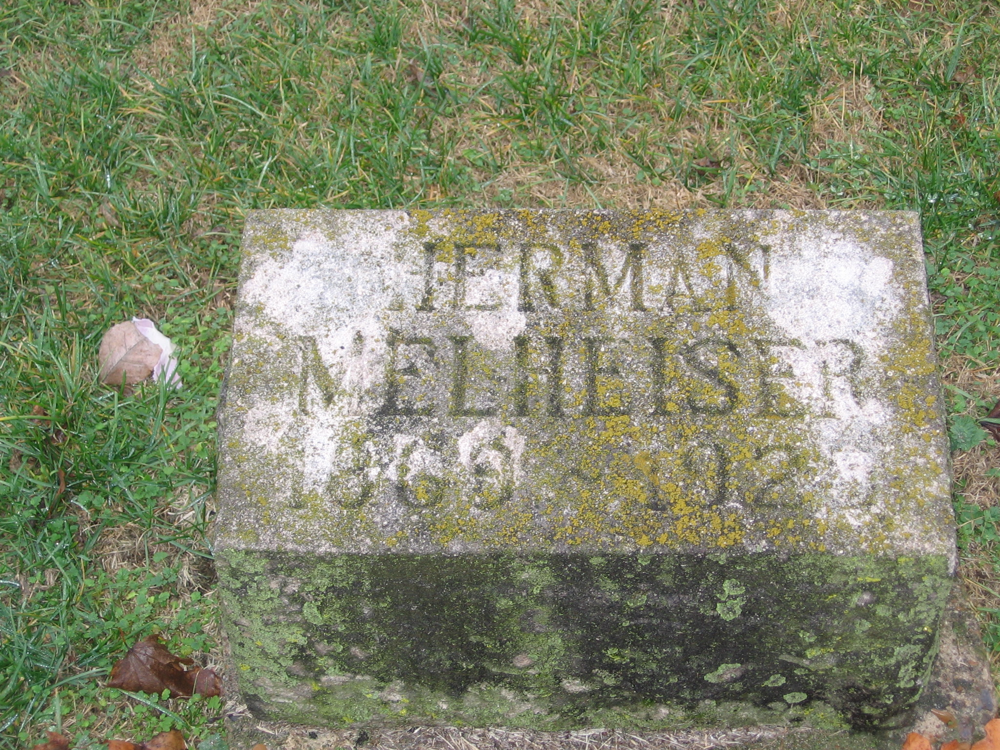

|  |
5. Herman Jakob MUHLHAUSER [scrapbook] (Johann Jacob
) was born on 10 Mar 1869. He died 1 on 5 Feb 1925 in IRVINE, ESTIL COUNTY KY. He was buried 2 in Feb 1925 in ROSEHILL ELMWOOD CEMETERY, Owensboro, Ky.
Herman was counted in a census in 1880 in Daviess County KY. He obtained a marriage license 3 from Marriage to Mary Baumann on 22 Feb 1864 in OWENSBORO, DAVIESS COUNTY KY. He was counted in a census 4 in 1880 in Daviess County KY. He obtained a marriage license 5 on 18 Feb 1901 in OWENSBORO, DAVIESS COUNTY KY. He was counted in a census 6 in 1920 in Daviess County, Kentucky.
Herman lived on the farm and helped his father until age 23, then married Rosetta Clark, united in marriage March 1, 1892 in Owensboro KY witnessed by Mr. & Mrs W.M. Good, signed by Thomas Gamborn
Herman at one time owned farm land on the Veech Road, he also inherited a small tract of land and the log house he was born in the home place, his father John Jacob deeded to him. Herman also owned 70 acres of land on Millers Mill Road, at one time according to deed Books at Daviess County Court House shows he sold to George Elmer, 70 aces of land in 1905.
Deed Book at Daviess County Court House also shows, John Mulheiser, produced to court the written request of Herman Melhiser, a minor over 14 years of age requesting the court to appoint John Mulheiser as his guardian, which John Melhiser be and is hereby appointed gdn of said Herman Melhiser, whereupon he took oath required by law and excepted bond the Commonwealth, with Joseph Newbecker as surety. Conditioned according to law which bounds is accepted and approved by court.
J.D. Arthisson, Judge
|


{kind=link}
{kind=link}
{kind=link}
{kind=link}
{kind=link}